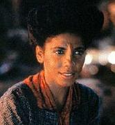

Boraalani |
|
||||
|  |
Umanoidi originari di
Boraal II, il
cui pianeta natale è diventato inabitabile nel 2370.
Il solo gruppo di un villaggio di Boraalani, il cui stadio di sviluppo è
paragonabile al Medioevo terrestre, è stato spostato su
Vacca VI per un
intervento di Nikolai Rozhenko, che stava studiando la loro civiltà nel momento
in cui
Boraal II stava diventando
inabitabile. Questo agglomerato di persone è l'unico sopravvissuto al disastro
di
Boraal II.